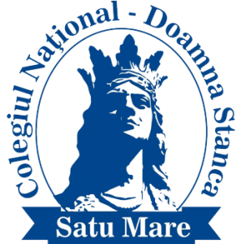

Self-taught full-stack developer with a hands-on experience with utility-scale PV systems gained through on-site work and a strong interest in engineering and technology. Currently studying Automotive Engineering in Oradea.
Born in Dorolt, Satu Mare, I also serve as an organist, shaping discipline, creativity, and attention to detail.
Motivated, curious, and always learning — focused on practical solutions and personal growth.
My academic journey and formal training.

Mathematics and Computer Science
A prestigious high school known for its rigorous academic
programs, particularly in mathematics and computer science. It
prepares students for higher education through a strong focus on
theoretical and practical knowledge, fostering critical thinking,
discipline, and innovation. The school has a longstanding
tradition of excellence in both science and humanities, and it
actively encourages student participation in competitions and
extracurricular activities.
Faculty of Managerial and Technological Engineering
Automotive Engineering
Offers multidisciplinary programs focused on engineering,
technology, and management. The university emphasizes practical
skills and innovation to prepare students for careers in
automotive, transport, and industrial sectors. It combines
theoretical knowledge with hands-on experience, fostering both
technical expertise and leadership abilities.
Technologies and principles I actively use to build reliable, scalable, and clean solutions.
HTML, JS, C/C++, C#, Java with focus on responsiveness, accessibility, and performance.
Breaking down complex challenges into maintainable, real-world solutions.
Readable codebases, modular design, and long-term maintainability.
Clear communication, version control, and professional teamwork workflows.